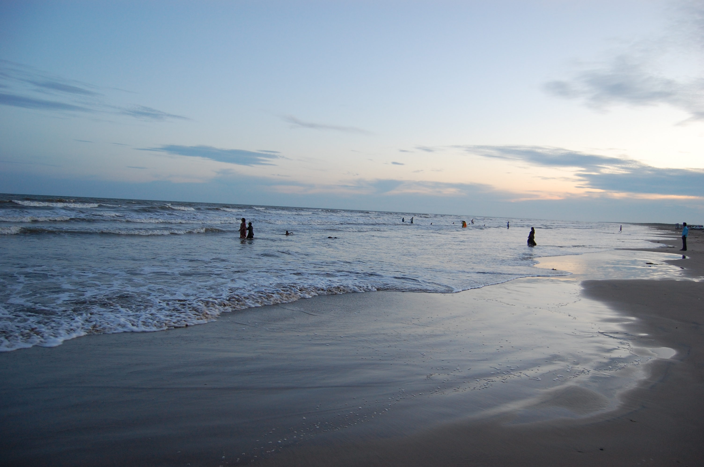

KRISHNA
Krishna district is a district in the coastal Andhra Region in Indian state of Andhra Pradesh, with Machilipatnam as its administrative headquarters. It is surrounded on the East by Bay of Bengal, West by Guntur, Bapatla and North by Eluru and NTR districts and South again by Bay of Bengal
Krishna District with its district headquarters at Machilipatnam is the coastal district of Andhra Pradesh. It was formerly called as Machilipatnam District. Later it was renamed as Krishna District after the holy river Krishna, by adding certain Taluks of the abolished Guntur District in 1859. Again in 1925, Krishna District was further divided into Krishna and West Godavari Districts. There are no changes in its jurisdiction except some minor changes (in Divi Taluk and Munagala Paragana). Further Again in 2022 Krishna District was divided into Krishna and NTR Districts.
.jpg)
HISTORY
The history of this region dates back to the 2nd century BCE. The area was ruled by the Satavahanas (230 BC – AD 227); Pallavas (AD 340 – AD 500), Chalukyas (AD 615 – 1070 AD) and later by Cholas, Kakatiyas, Musunuri Nayaks, Reddy dynasty and Gajapati kings of Odisha.[7] Satavahana period (230 BC – AD 227): The Satavahanas ruled this region with headquarters at Srikakulam, at present a village in Ghantasala mandal of the district. Prominent rulers during this period were Srimukha (founder), Gotamiputra Satakarni and Yajnasri Satakarni (last Satavahana king). The Satavahanas imparted more stability and security to the life of the people of the region for more than four centuries.


GEOGRAPHY
Krishna district is surrounded on the east by Bay of Bengal, west by Guntur and Bapatla districts and north by Eluru and NTR districts and south by Bay of Bengal. The Krishna district occupies an area of 3,775 square kilometres (1,458 sq mi). It has a total coastline of 88 km (55 mi).
Geographically, Krishna district is a blend of coastal lowlands, fertile river deltas, and slightly elevated inland tracts. The presence of the mighty Krishna River, which flows through the district before meeting the Bay of Bengal, has shaped the land into one of the most agriculturally productive regions in Andhra Pradesh. Vast stretches of paddy fields, aquaculture ponds, and coconut groves dominate the landscape, giving it a green and lush appearance for much of the year. The district’s long coastline not only contributes to the fishing industry but also plays a role in moderating the climate along the shore. Inland, the soil types vary from rich alluvium near the delta to red sandy loams in the upper tracts, supporting a wide variety of crops and horticulture. Coastal villages are interspersed with creeks and mangroves, which provide habitat for marine life and act as a natural barrier against storm surges. The geography has also played an important role in trade and cultural exchange, with coastal ports and river routes historically linking the district to other regions of India and beyond. Natural beauty is abundant, with serene beaches, fertile plains, and scenic riverbanks that attract both tourists and locals. This diverse terrain also fosters different livelihoods, from agriculture and fishing to salt farming and handicrafts. As a part of the broader Godavari-Krishna delta system, the district is ecologically significant and requires careful management to balance development with environmental conservation.
FLOURA AND FAUNA
The forest occupies only 9 percent of the total undivided district area. However, it contains Reserved Forest areas in Nandigama, Vijayawada, Tiruvuru, Nuzvid, Gannavaram, Machilipatnam and Divi Seema Talukas. A type of light wood known as ‘Ponuku’ (Gyrocapus Jacquini) is found in the Kondapalli hills. The wood is used for the manufacture of the well known Kondpalli toys. The most noticeable trees are pterocarpus, Terminalia, Anogeissus and Logustroeinai and Casuarina.
Panthers, hyenas, jungle cats, foxes, bears and other carnivorous mammalian fauna are found here. Deer, spotted deer sambar, blackbuck and other herbivorous animals are found in the inland forests. The district has a large number of Murrah buffaloes and cows.
The biodiversity of Krishna district is a mix of coastal, riverine, and inland forest ecosystems, each supporting its own variety of flora and fauna. The mangrove forests near the coast, especially around Diviseema, serve as nurseries for fish and crustaceans and provide roosting grounds for migratory birds. These areas are particularly important for species conservation, as they offer shelter and breeding sites for both terrestrial and aquatic species. The inland reserved forests are home not only to large mammals but also to reptiles like monitor lizards and a variety of snakes, both venomous and non-venomous. Birds such as peacocks, parakeets, mynas, and kingfishers are common, and during the migratory season, flocks of pelicans and painted storks can be spotted in the wetlands. Agricultural lands, too, contribute to biodiversity, with crops, orchards, and irrigation tanks supporting frogs, insects, and small mammals that form part of the local food web. Conservation efforts in recent years have focused on preventing illegal logging, reducing man-animal conflict, and preserving the delicate mangrove ecosystem. The Kondapalli hills, apart from their toy-making heritage, also serve as a microhabitat for endemic plants. With increasing awareness about ecological balance, there is hope that both the forests and the animals they shelter will continue to thrive alongside human settlements.
CLIMATE
The climatic conditions of the district consist of extremely hot summers and moderately hot winters and may be classified as tropical. The period starting from April to June is the hottest. The annual rainfall in the region is about 1047.68 mm and 66% of it is contributed to by the Southwest monsoon.
Black Cotton (57.6 percent), Sand clay loams (22.3 percent), Red loams (19.4 percent), and sandy soils account for balance 0.7% in the district.
Due to its geographical positioning along the coast, Krishna district experiences a humid tropical climate, with significant variations between coastal and inland areas. Summers can be particularly harsh in interior regions, with temperatures often rising above 40°C, while the coastal belt enjoys slightly milder conditions due to the sea breeze. The monsoon season, from June to September, brings heavy rains that replenish reservoirs, feed irrigation canals, and sustain agriculture. The northeast monsoon from October to December provides additional rainfall, especially benefiting rabi crops. Winters, though short, are pleasant, with cooler nights and warm days. Humidity levels remain high throughout the year, especially in coastal villages where fishing communities rely on the relatively stable weather for their livelihoods. Occasionally, the district is affected by cyclonic storms from the Bay of Bengal, which can cause flooding, crop damage, and disruption of transportation. The diversity in soil types—from fertile black cotton soils ideal for cotton and paddy to sandy loams suited for horticulture—means that the climate works in tandem with the land to support varied agriculture. However, climate change and shifting weather patterns are a growing concern, prompting discussions about sustainable farming, water conservation, and disaster preparedness to protect both livelihoods and ecosystems.
TRANSPORT
Road NH 65 from Pune to Machilipatnam, NH 165 from Pamarru to Palakollu, NH 216 from Ongole to Kathipudi pass through the district.
Rail There exists 97 km (60 mi) of rail network in the district. Gudivada Junction railway station and Machilipatnam railway station are prominent railway stations in the district. Nearest major railway station is Vijayawada Junction railway station at a distance of 80Km from Machilipatnam by train.
Water The Machilipatnam Port is currently under construction. The Port will have an initial cargo capacity of 35 million tonnes, through four berths-three general cargo berths and one coal terminal. The Port is scheduled to be completed in two years. In the future, the capacity of the four-berth deep water port will be increased to 116 million tonnes as the cargo traffic increases gradually.
Air Krishna district is served by Vijayawada International airport located in Gannavaram at a distance of 67.9 km from Machilipatnam.
Transportation in Krishna district reflects its economic and geographical diversity, with an extensive road network connecting coastal villages, fertile agricultural areas, and bustling towns. National and state highways facilitate trade, tourism, and daily commuting, while rural roads link small settlements to markets and services. The railway system, though limited in track length, is strategically important for moving goods like paddy, seafood, and salt, as well as for passenger travel. Machilipatnam Port, once operational, is expected to significantly boost maritime trade, especially for exports of agricultural produce, seafood, and industrial goods. Inland waterways have also been explored for cargo transport, which could reduce road congestion and carbon emissions. The proximity to Vijayawada International Airport ensures connectivity to major Indian cities and some international destinations, benefiting both business travelers and tourists. Public transport services, including buses and auto rickshaws, are the backbone of local mobility, while private vehicles dominate in semi-urban and rural areas. Plans for improved bus terminals, more railway connections, and better integration between road, rail, air, and water transport aim to position Krishna district as a well-connected economic hub in Andhra Pradesh.
CULTURE
The culture of Krishna district is mostly traditional in rural places and moderately modern in Gudivada and Machilipatnam. It is also famous as the birthplace for Indian classical dance named Kuchipudi. The dialect of Telugu spoken in Krishna is widely considered to be the standard form of Telugu.
Cultural life in Krishna district is a vibrant blend of art, music, dance, festivals, and culinary traditions. Kuchipudi, the classical dance form originating from the village of the same name, is not just a performing art but also a cultural emblem of Andhra Pradesh. The district is known for its rich literary heritage, with many noted poets and writers contributing to Telugu literature. Handloom weaving, especially in Machilipatnam, produces intricate kalamkari textiles that are valued across India and abroad. Festivals like Sankranti, Ugadi, Dasara, and Deepavali are celebrated with grandeur, featuring traditional games, processions, and temple fairs. Coastal villages have unique fishing community traditions, while inland areas preserve agrarian rituals linked to crop cycles. The cuisine is known for its spicy curries, seafood dishes, and traditional sweets like ariselu and bobbatlu. Folk arts such as Burrakatha and Harikatha continue to be performed during festive gatherings, keeping oral storytelling traditions alive. Despite modernization, the district retains its cultural roots, blending contemporary influences with age-old customs.
TOURISM
There are several places of tourist interest in the district. Some of them are given below.
- Srikakulandhra Maha Vishnu Temple
- Kolleru lake (Kaikaluru Mandal): largest freshwater lake
- Manginapudi beach: Natural beach
- Movva: Sri Movva Venugopala Swamy temple. Kshetrayya is said to have composed his famous lyrics here.
- Kuchipudi: the birthplace of Siddhendra Yogi, the originator of the Kuchpudi dance
- Ghantasala: once upon a time, a port and a halting place for Buddhist pilgrims and merchants travelling from Kalinga to Ceylon. Hindu and Buddhist Sculptures can be seen here
- Srikakulam (Ghantasala Mandal): the historical capital of Andhra Empire of Goutamiputra Satakarni. This is famous for the temple of Andhra Mahavishnu
- Hamsaladeevi (Koduru Mandal): river Krishna drains into the Bay of Bengal at this place
- Gudivada: famous for Jain temple of Parswandha Swamy
Tourism in Krishna district is shaped by its unique combination of natural beauty, historical sites, and cultural landmarks. The pristine coastline, dotted with beaches like Manginapudi and Hamsaladeevi, offers opportunities for relaxation, fishing, and water sports. Pilgrimage tourism thrives with ancient temples, some dating back centuries, attracting devotees from across the country. Kolleru Lake, a haven for migratory birds, draws nature enthusiasts and photographers, especially in the winter months. The village of Kuchipudi remains a living cultural site, with dance schools and performances keeping the classical tradition vibrant. Heritage lovers find Ghantasala and Srikakulam fascinating for their archaeological remains and sculptures, reflecting the region's role in trade and Buddhism. Rural tourism initiatives are introducing visitors to village life, local cuisine, and crafts such as kalamkari. The development of better infrastructure, eco-friendly resorts, and guided tours is helping Krishna district emerge as a versatile tourism destination that appeals to pilgrims, beach lovers, history buffs, and cultural explorers alike.